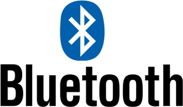

BLUETOOTH

o bluetooth vêm sendo uma boa tecnologia?
É inegável a eficiência do bluetooth, exatamente por ser tão bom no quê se propõe a fazer quê existem fones de ouvido e outros dispositivos quê funcionam via bluetooth, então é possível dizer sem sombra de dúvida quê o bluetooth é uma boa tecnologia.
existe concorrencia ou tecnologia parecida?
sim! O Miracast é uma tecnologia que cria uma conexão de Wi-Fi ponto a ponto, na prática, chamada de Wi-Fi Direct. Assim, é possível realizar a transmissão de conteúdo entre diferentes produtos sem a necessidade de conectar nenhum fio. Basta sincronizar os aparelhos. Algo bem semelhante ao que o Bluetooth faz.